名侦探柯南
简介
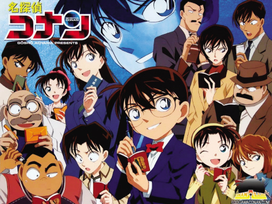
名侦探柯南》（日文：名探侦コナン；英文：DetectiveConan；美版英文：CaseClosed）是日本漫画家青山刚昌的一部以侦探推理情节为主题的漫画作品，讲述了高中生侦探工藤新一被神秘的黑衣组织灌下代号为APTX4869的毒药后身体缩小为小学生，因此隐瞒身份，调查组织的同时不断解决各类案件的故事。初始创作于1994年，目前仍在日本小学馆的漫画杂志《周刊少年Sunday》上连载。该作品亦改编为同名电视动画、真人版电视剧等。
故事背景
高中生侦探工藤新一，被称为“日本警察的救世主”、“平成年代的 福尔摩斯”。一次在与青梅竹马兼女友 毛利兰一起去游乐园游玩时，发现两个行动诡异的黑衣男子。他跟踪他们直到交易现场，另一个黑衣人趁其不注意从后面将他一棒击倒，并灌下一种名为 APTX4869的神秘毒药企图杀他灭口，但因为副作用他的身体竟回到发育期的孩童状态。考虑到要是黑衣人知道他还活着的话，必将使周围的亲朋好友受到牵连，于是新一化名为“ 江户川柯南”，寄住在女友毛利兰的家中，想借助其父亲、担任侦探的 毛利小五郎的力量来找寻黑衣人。不料小五郎不但对其没有帮助，还是个冒失的糊涂侦探。所以发生案件后，柯南就用 阿笠博士发明的手表型麻醉枪让毛利小五郎睡着，接着用 蝴蝶结变声器模仿他的声音来进行推理，解决了许多案件，同时也结交了许多伙伴，并且一直寻找着 黑衣组织的人的下落，希望有朝一日将其绳之以法，并变回原来的样子。
人物简介
江户川柯南
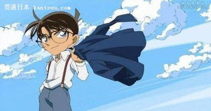
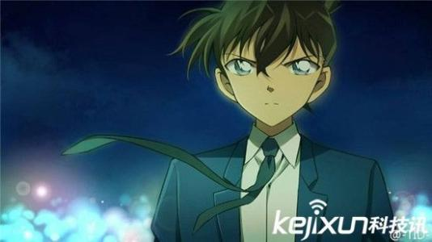
真实身份是高中生侦探工藤新一。17岁，因服下毒药身体变小后约7岁。生日是5月4日 ，来源于1891年5月4日福尔摩斯和莫里亚蒂教授坠入莱辛巴赫瀑布的日期。作者青山刚昌称柯南的身高会有微妙变化 ，也称柯南的身高在小学一年级生中算小个子，而工藤新一的身高是174cm 。体重是18.5 kg，血型不详，但与小兰相同 （A型的说法为翻译错误）。原来住在东京都米花町2丁目21番地，来源于福尔摩斯的住址贝克街221B（“贝克”和“米花”的日文发音相同，都为“Beika”）。现住在毛利侦探事务所，地址为东京都米花町5丁目39番地1号（动画原创设定) 。在帝丹小学1年B班就读（工藤新一在7岁时为1年A班手机型号是索爱W21S → 索爱Xperia arc S LT18i（漫画File.796、TV 673起）。
毛利兰
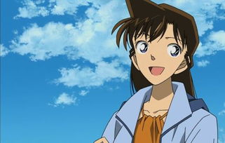
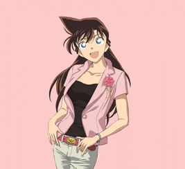
就读于帝丹高中二年级B班，校空手道部的主将。父亲是名侦探毛利小五郎，母亲是律政界女王妃英理，青梅竹马兼男友是高中生侦探工藤新一（化名江户川柯南）。被黑衣组织成员贝尔摩得称为“Angel（天使）” 。虽曾数次怀疑柯南的身份，但还不知道柯南就是新一。
灰原哀
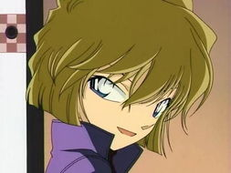
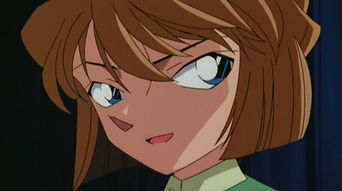
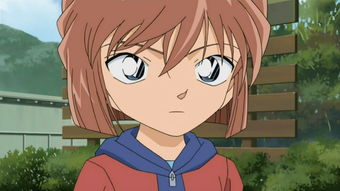
本名宫野志保，其原为黑衣组织的成员雪莉（Sherry），是能使身体缩小的药物——“APTX4869”的发明者。在姐姐宫野明美遭组织杀害后，因反抗组织而被囚禁，服下APTX4869，身体缩小后背叛组织逃亡，化名灰原哀，寄宿于阿笠博士家中，就读于帝丹小学一年B班。
怪盗基德
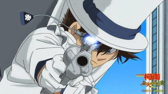
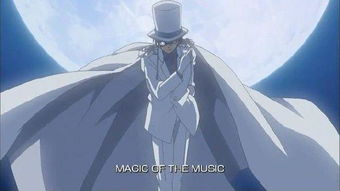
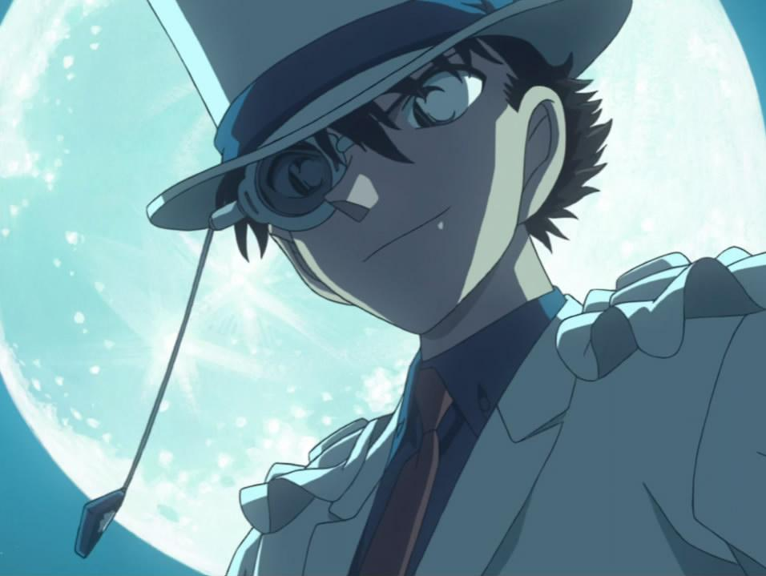
怪盗基德（日文：怪盗キッド；英文：Kid the Phantom Thief），又译怪盗小子、怪盗奇度，原名“怪盗1412号”（源自其国际罪犯代码“1412”），是日本动漫《魔术快斗》中的主人公以及《名侦探柯南》中的客串角色。第一代的真实身份为黑羽盗一，现在第二代为黑羽快斗。一个充满传奇色彩的怪盗，拥有过人才智，精通易容、变声、逃脱术，以珠宝等各类贵重艺术品为目标，使用魔术手法进行犯案的超级盗窃犯。
黑衣组织
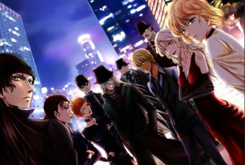
黑衣组织是日本动漫《名侦探柯南》中的一个笼罩在神秘色彩中的跨国犯罪组织，自剧情伊始便已经出现。主角工藤新一因为看到了组织进行非法交易的场面而被琴酒灌下毒药（APTX4869）灭口，却幸运生还，并在药物偶发作用下身体缩小成为小学生模样。他化名为江户川柯南，借住在青梅竹马毛利兰家的毛利侦探事务所，暗中调查黑衣组织。该组织的真实名称不详，片中一般以“黑衣（黑暗）组织”、“组织”代称，组织的组成结构和目的也不明显。但可以肯定，黑衣组织是一个势力很广的大型犯罪组织，资产雄厚，并且在日本政界、经济界和科学界有很深的人脉。惯用手法是操控重要人物的生死，再暗中以金钱收买，开发谜样的药物以及足以影响全人类未来的程序。FBI和CIA在多年前就已经介入了对组织的调查。组织的代表颜色为黑色，其成员都穿着“如乌鸦般漆黑”的衣服（宫野明美语）。除Boss外，主要成员都以酒名作为代号。作者青山刚昌称，有代号的成员基本属于同一级别。内部似乎有非常严格的纪律，不合格的成员、暴露组织身份的成员和背叛组织的成员都会被很快铲除，做事绝对不会留下丝毫痕迹。而且保密性极强，即使成员之间也未必互相认识（比如灰原哀就未曾听说过基尔等人）。组织成立目的同样不详。成立时间不少于半个世纪，表现在TV 130《竞技场无差别胁迫事件（前篇）》灰原的自言自语：“工藤君，也许你不知道，你已经深深地介入到我们组织从半世纪前就开始的秘密计划当中了